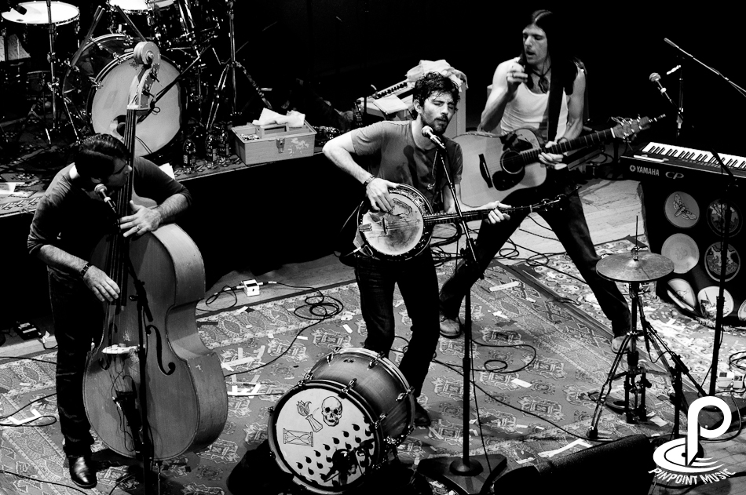

Images of past festivals

Our festival celebrates folk, rock, and everything inbetween. Come join us this March the Folk Rock event of the year. We are featuring 15 musical artists both new and old.
The Avett Brothers are an American folk rock band from Mount Pleasant, North Carolina, United States. The band is made up of two brothers, Scott Avett (banjo) and Seth Avett (guitar), as well as Bob Crawford (double bass) and Joe Kwon (cello). Mike Marsh (drums), Tania Elizabeth (violin) and Paul Defiglia (keyboard) are touring members of the band, with Kwon featured on recordings from 2007's Emotionalism and later.
Mumford & Sons are a British rock band from London, formed in 2007. The band consists of Marcus Mumford (lead vocals, electric guitar, acoustic guitar, drums), Ben Lovett (vocals, keyboard, piano, synthesizer), Winston Marshall (vocals, electric guitar, banjo) and Ted Dwane (vocals, bass guitar, double bass).
The Decemberists are an American indie folk rock band from Portland, Oregon. The band consists of Colin Meloy (lead vocals, guitar, principal songwriter), Chris Funk (guitar, multi-instrumentalist), Jenny Conlee (keyboards, piano, Hammond organ, accordion), Nate Query (bass), and John Moen (drums).
Old Crow Medicine Show is an Americana string band based in Nashville, Tennessee that has been recording since 1998. They were formally inducted into the Grand Ole Opry on September 17, 2013. Their ninth album, Remedy, released in 2014, won the Grammy Award for Best Folk Album. The group's music has been called old-time, folk, and alternative country. Along with original songs, the band performs many pre-World War II blues and folk songs.
The Lumineers are a folk rock band, based in Denver, Colorado. The two founding members and songwriters of the Lumineers are Wesley Schultz (lead vocals, guitar) and Jeremiah Fraites (drums, percussion). Schultz and Fraites began writing and performing together in New Jersey in 2002. Cellist and vocalist Neyla Pekarek joined the band in 2010, after responding to a Craigslist ad.
Fleet Foxes is an American indie folk band formed in Seattle, Washington.Their first two albums were produced by Sub Pop and Bella Union record labels, while the group is currently unsigned. The band came to prominence in 2008 with the release of its second EP, Sun Giant, and its first, self-titled album Fleet Foxes. Both received much critical praise and reviewers often noted the band's use of refined lyrics and vocal harmonies. Fleet Foxes' second studio album, Helplessness Blues, was released on 3 May 2011.
Bon Iver is an American indie folk band founded in 2007 by singer-songwriter Justin Vernon. Vernon released Bon Iver's debut album, For Emma, Forever Ago independently in July 2007. The majority of that album was recorded while Vernon spent three months in a cabin in northwestern Wisconsin. Bon Iver won the 2012 Grammy Awards for Best New Artist and Best Alternative Music Album for their album Bon Iver, Bon Iver. The name Bon Iver is derived from the French phrase bon hiver (French pronunciation: , meaning "good winter", taken from a greeting on Northern Exposure.
Samuel "Sam" Ervin Beam (born July 26, 1974), better known by his stage and recording name Iron & Wine, is an American singer-songwriter. He has released five studio albums, several EPs and singles, as well as a few download-only releases, which include a live album (a recording of his 2005 Bonnaroo performance). He occasionally tours with a full band.
Wilco is an American alternative rock band based in Chicago, Illinois. The band was formed in 1994 by the remaining members of alternative country group Uncle Tupelo following singer Jay Farrar's departure. Wilco's lineup changed frequently during its first decade, with only singer Jeff Tweedy and bassist John Stirratt remaining from the original incarnation. Since early 2004, the lineup has been unchanged, consisting of Tweedy, Stirratt, guitarist Nels Cline, multi-instrumentalist Pat Sansone, keyboard player Mikael Jorgensen, and drummer Glenn Kotche. Wilco has released ten studio albums, a live double album, and four collaborations: three with Billy Bragg and one with The Minus 5.
Edward Sharpe and the Magnetic Zeros is an American indie folk band formed in Los Angeles, California in 2007. The group is led by lead singer Alex Ebert. The band's name is based on a story Ebert wrote, when he was a kid, about a messianic figure named Edward Sharpe. Drawing from roots rock, folk, gospel, and psychedelic music, the band's image and sound evoke the hippie movement of the 1960s and 1970s. The group's first show was played July 18, 2007 at The Troubadour in West Hollywood, California. Their first studio album, Up from Below, was released on July 7, 2009 on Community Records and featured the popular single "Home". The group released their second full-length album, Here, on May 29, 2012, and third album, Edward Sharpe and the Magnetic Zeros, on July 23, 2013. Their fourth studio album, PersonA, was released in April 2016.
Dawes is composed of brothers Taylor (guitars and vocals) and Griffin Goldsmith (drums), along with Wylie Gelber (bass) and Lee Pardini (keyboards). Dawes was formed from the band Simon Dawes after the departure of co-songwriter Blake Mills, subsequently abandoning a post-punk sound in favor of folk rock. Dawes has been described as having a Laurel Canyon sound derived from artists such as Crosby, Stills, and Nash, Joni Mitchell and Neil Young.
Of Monsters and Men is a five-member, English-language, indie folk-pop band from Reykjavík, Iceland, formed in 2010. The members are lead singer/guitarist Nanna Bryndís Hilmarsdóttir, co-singer-guitarist Ragnar "Raggi" Þórhallsson, guitarist Brynjar Leifsson, drummer Arnar Rósenkranz Hilmarsson and bassist Kristján Páll Kristjánsson.
Oh No! There's a Cat in my Boot! is an indie Folk band started by former plumber Joeseph Bean. He started the band in 1999 when he tried to put on his shoes and was surprised to find a cat residing in his left boot
The Vintage Tomatoes is a folk rock band started in 2014 by Florence Roy, Lenny Quack, Geoffrey Tables, and Mary Coconut. The band met at farmer's market in Portland at a tomato stand where they found they all shared a passion for slightly aged tomatoes. They have been playing together ever since.'
Banjo Bob & the Tumble Weed Squad is a Indie Folk band based out of Boise, Idaho. Members include Banjo Bob, Harmonica Henry, Guitar Gary, and Tambourine Tom.